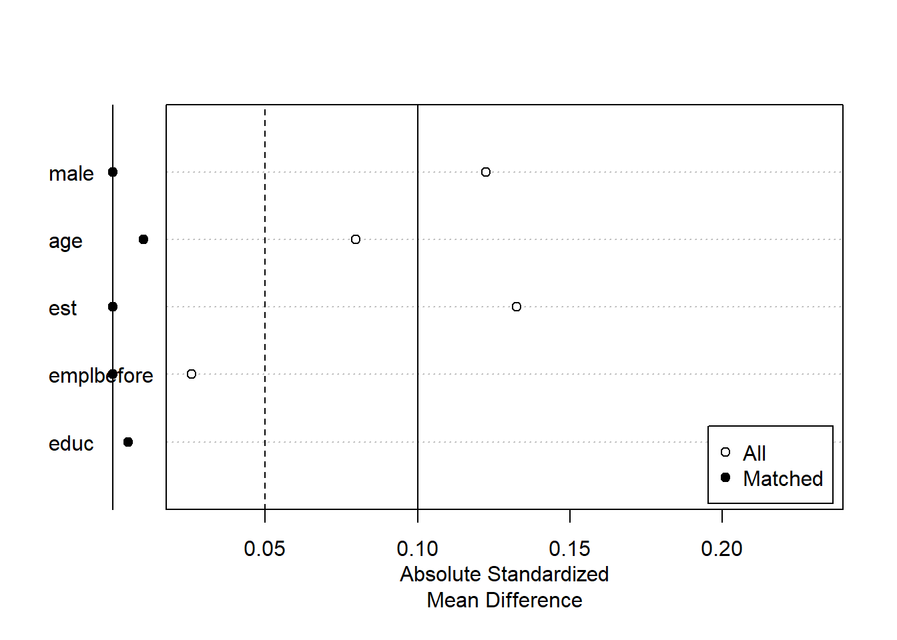
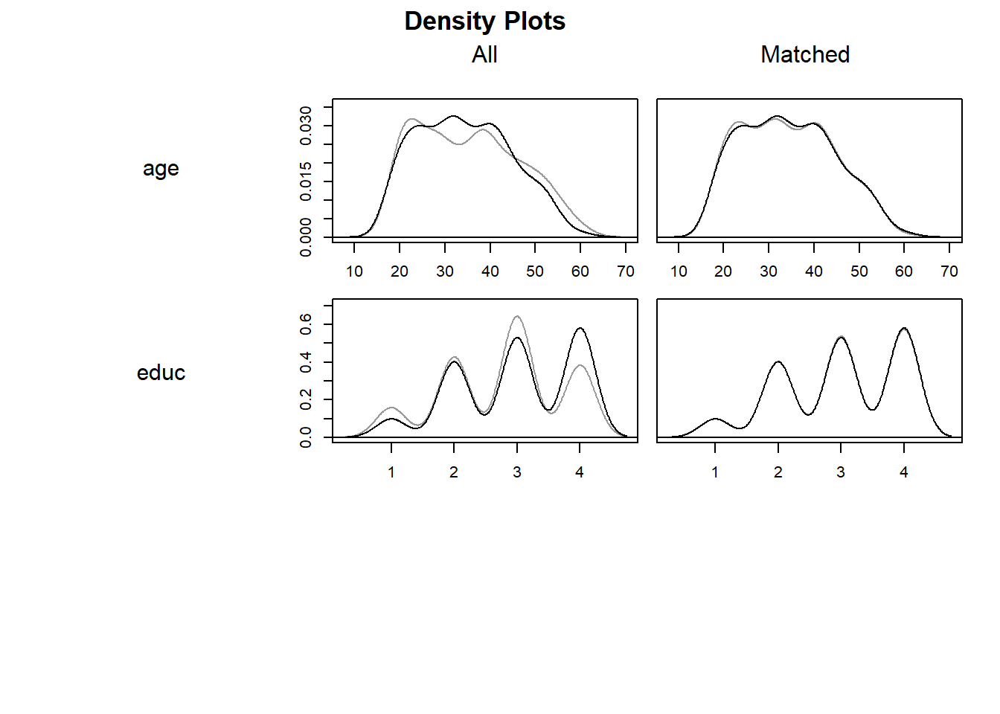
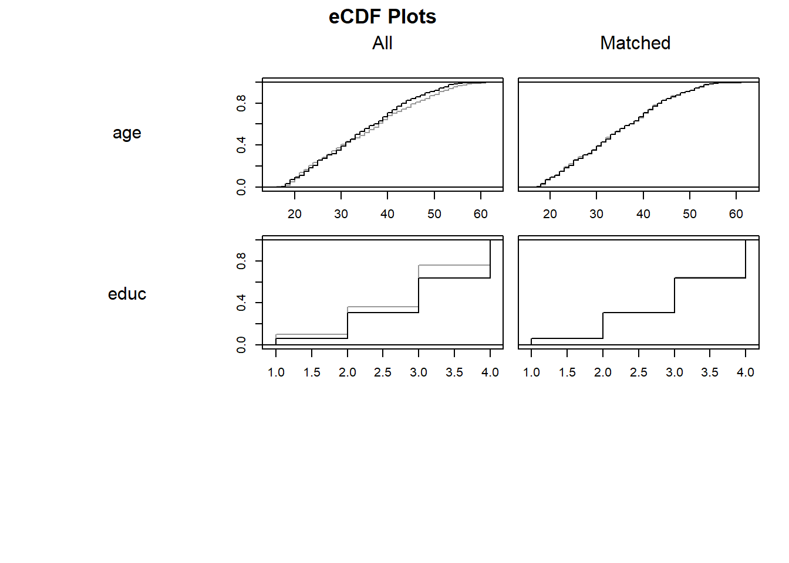
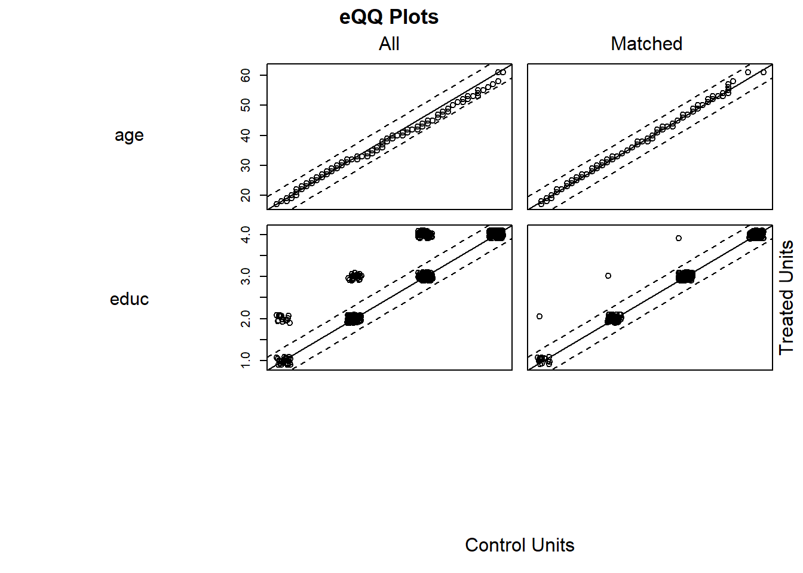
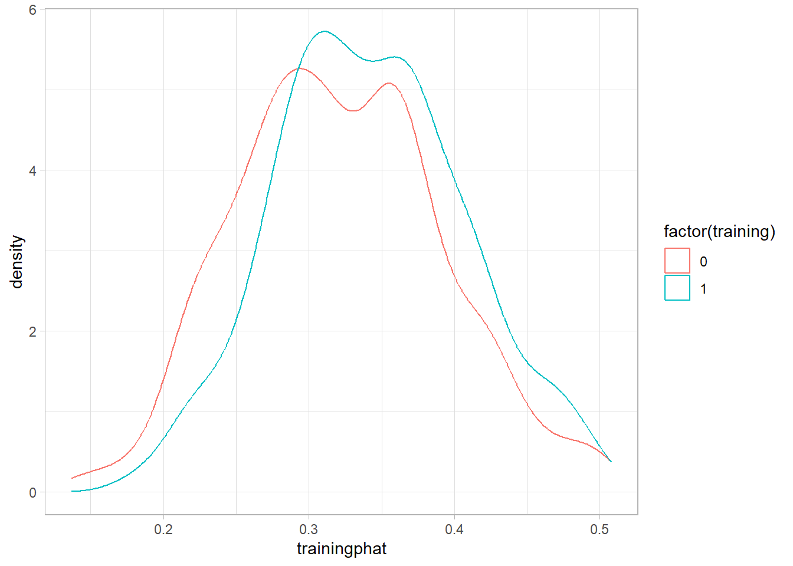
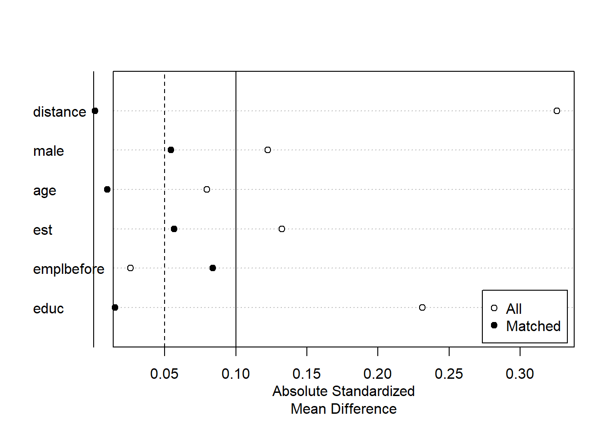
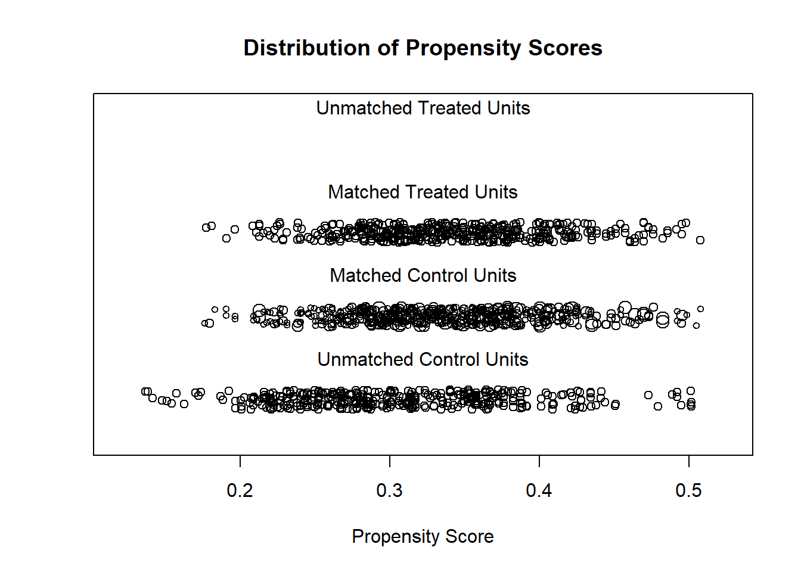

library(dplyr) #andmete teisendamine
library(ggplot2) #joonised
library(stargazer) #regressioonimudeli tabelite kenasti esitamiseks
library(lmtest) #coeftest käsu jaoks
library(sandwich) #robustsete standardvigade jaoks
library(MatchIt) #sobitamise jaoks
library(marginaleffects) #marginaalsed efektid6 Sobitamine
6.1 Mõistetest
Sobitamine (matching) on vaatlusandmetel põhinev meetod põhjusliku mõju hindamiseks olukorras, kus juhuslikku katset ei ole tehtud ning osalemine meetmes (nt tööturukoolitus, ettevõtte eksporditoetus jm) sõltub kas inimeste enda otsustest või ka meetmete korraldajatest.
Sobitamise idee on väga lihtne: püüame iga osalusrühma inimese jaoks leida võimalikult sarnase inimese võrdlusrühmast ning võrdleme seejärel nende tulemusi.
Tuginedes potentsiaalsete tulemuste raamistikule tähistame:
- \(Y^1_i\) – isiku \(i\) potentsiaalne tulemus, kui ta osaleks meetmes
- \(Y^0_i\) – sama isiku potentsiaalne tulemus, kui ta ei osaleks
- \(D_i \in \{0,1\}\) – indikator, kas isik tegelikult osales (1) või mitte (0)
- \(X_i\) – vektor taustatunnuseid (vanus, sugu, haridus, eelnev töökogemus jne)
Meid huvitab näiteks keskmine mõju osalejatele (ATT):
\[ \tau_{ATT} = \mathbb{E}[Y^1_i - Y^0_i \mid D_i = 1]. \]
Meie probleem on see, et iga inimese puhul näeme ainult ühte tulemust, kas \(Y^1_i\) või \(Y^0_i\). Sobitamisega püüame iga osaleja jaoks leida sobiva inimese või ettevõtte võrdlusrühmast, kellel oleks võimalikult sarnased \(X\)-id, ning kasutame tema tegelikku tulemust \(Y^0_j\) ligikaudse asendusena vaatlemata \(Y^0_i\) väärtusele. Me seega eeldame, et kui kõik jälgitavad tegurid on sarnased, siis on sarnased ka mittejälgitavad tunnused, mis võiksid samaaegselt mõjutada osalemist ja tulemust.
Seega on sobitamise eelduseks (juba eelnevalt väljatoodud) tinglik sõltumatus osalemise otsuse ja potentsiaalsete tulemuste vahel (Conditional Independence Assumption, CIA):
\[ (Y^0_i, Y^1_i) \perp D_i \mid X_i, \]
ehk pärast piisavalt rikkalike taustatunnuste \(X\) arvesse võtmist ei sõltu osalemise otsus enam täiendavatest segajatest (confunders).
6.2 Täpne ja ligikaudne sobitamine
Täpne sobitamine
Lihtsaim meetod on täpne sobitamine (exact matching):
- igale osalusrühma vaatlusele \(i\) otsime kõrvale võrdlusgrupist need vaatlused, millel on täpselt samad \(X\) tunnuste väärtused (nt mees, 40-aastane, eestlane, elab Tartumaal jne);
- hindame mõju niiviisi sobitatud paaride tulemuste erinevuste abil; või kui taolisi vaatlusi on enam, siis grupikeskmiste erinevuste abil.
Kui leiame iga osaleja jaoks täpse vaste, saame ATT hinnata kujul
\[ \hat{\tau}_{ATT} = \frac{1}{N_1} \sum_{i: D_i = 1} \left( Y_i - Y_{j(i)} \right), \]
kus \(Y^0_{j(i)}\) on osalusvaatlusele \(i\) sarnase võrdlusgrupi isiku \(j\) tulemus ja \(N_1\) on osalusrühma vaatluste arv. Kui sarnaseid isikuid on mitu, siis võime kasutada sobivate isikute keskmist väärtust \(\bar{Y}^0_{(i)}\) , nt võtta juhuslikult M vaatluse väärtust (kus on M on tavaliselt väike number 1…5).
\[ \hat{\tau}_{ATT} = \frac{1}{N_1} \sum_{i: D_i = 1} \left( Y_i - \left[ \frac{1}{M} \sum_{m = 1}^{M} Y_{m(i)} \right] \right) = \frac{1}{N_1} \sum_{i: D_i = 1} \left( Y_i - \bar{Y}_{(i)} \right) \] Samamoodi saame leida mõju mitteosaljeate jaoks (ATU). Selleks lihtsalt vahetame rollid ja igale võrdlusrühma \(Y_i\) vaatlusele leiame kõrvale samade tunnustega osalusrühma vaatluse(d).
\[ \hat{\tau}_{ATU} = \frac{1}{N_0} \sum_{i: D_i = 0} \left(\left[ \frac{1}{M} \sum_{m = 1}^{M} Y_{m(i)} \right] - Y_i \right), \]
kus ja \(N_0\) on vaatlusrühma vaatluste arv.
Täpse sobitamise tulemusena tekib tavaliselt väike arv \(K\) rühmi. Sisuliselt annab täpne sobitamine meile rühmadevaheliste erinevuste kaalutud keskmise. (Vt https://andresvork.github.io/mojuopik/02-pomate.html#%C3%BClesanne-2.)
\[ \hat{\tau}_{ATT} = \sum^K_{k = 1} \left[ \left( \bar{Y}^{1, k} - \bar{Y}^{0, k} \right)\frac{N^k_1}{N_1} \right] \] kus \(\bar{Y}^{1, k}\) ja \(\bar{Y}^{0, k}\) on osalusrühma ja võrdlusrühma vaatluste keskmised väärtused rühmas \(k\). \(N^k_1\) on osalusrühma vaatluste arv rühmas \(k\). ATU leidmisel muutuvad vaid osakaalud, peame kasutama vastavalt \(N^k_0\) ja \(N_0\).
Täpse sobitamise näide
Vaatleme viit inimest. Meetmes osalesid A ja C.
| Isik | Vanus | Sugu | Palk (Y) | Meetmes (D) |
|---|---|---|---|---|
| A | 51 | 1 | 1500 | 1 |
| B | 51 | 1 | 1700 | 0 |
| C | 34 | 0 | 2400 | 1 |
| D | 34 | 0 | 2100 | 0 |
| E | 34 | 0 | 1900 | 0 |
Leia igale meetmes osalejale vanuse ja soo põhjal sarnane võrdlusisik (või võrdlusisikud) ning arvuta ATT.
Näita lahendust
| Osaleja | Sarnane | Osaleja Y | Võrdlus Y | Erinevus |
|---|---|---|---|---|
| A | B | 1500 | 1700 | -200 |
| C | D, E | 2400 | 2000 | 400 |
| ATT | 100 |
Inimesele A on sarnane B (võrdlusväärtus on 1700); inimesele C on sarnased D ja E, kasutame võrdluseks nende keskmist väärtust 2000 = (2100 + 1900)/ 2. Seega \(ATT = (-200 + 400)/2 = 100\)
6.3 Ligikaudne sobitamine
Praktiline probleem täpse sobitamisega on see, et kui tunnuseid on palju ja valim ei ole väga suur, siis jääb enamikul osalejatest täpne vaste leidmata. Samuti kui tegemist on pidevate tunnustega, nt eelnev sissetulek, siis täpse vaste leidmine ongi teostamatu ja peaks kasutama näiteks vahemikke. Täpsest sobitamise asemel kasutame enamasti ligikaudset sobitamist (approximate matching).
Ligikaudse sobitamise puhul otsime ühte või enamat kõige sarnasemat naabrit (nearest neighbor matching) igale osalusrühma vaatlusele. Me lubame erinevusi tunnustes \(X\). Oluline on defineerida:
- mingi kauguse mõõdik vaatluste vahel \(d(X_i, X_j)\);
- algoritm, mis valib iga osalusrühma isiku \(i\) jaoks “lähimad naabrid” võrdlusrühmast.
Selle tulemusena:
- iga osaleja \(i\) jaoks leitakse üks või mitu võrdlusgrupi isikut \(j\), kellel on minimaalne kaugus \(d(X_i, X_j)\);
- mõju üksikule isikule hinnatakse kui erinevus \(Y_i - \bar{Y}_{(i)}\), kus \(\bar{Y}_{(i)}\) on lähimate naabrite tulemuse keskmine:
- ATT on nende erinevuste keskmine kõigi osalejate seas, sarnaselt valemile täpse sobitamise korral.
Ligikaudse sobitamise kvaliteet sõltub otseselt sellest, kui hea on valitud kaugusmõõdik ja sobitamisalgoritm.
Mahalanobise kaugus
Sobitamisel on meil mitmemõõtmeline tunnuste vektor \(X_i\), nt vanus, sugu, sissetulek, jne. Vajame aga üht numbrit, mis kirjeldaks, kui kaugel kaks inimest teineteisest on nende tunnuste lõikes. Üks enimkasutatud valik on Mahalanobise kaugus.
Olgu \(X_i\) ja \(X_j\) kahe vaatluse tunnuste vektorid \(X_i = (x_{1i}, x_{2i}, ..., x_{ki})\) ja \(X_j = (x_{1}, x_{2j}, ..., x_{kj})\) ning \(\Sigma\) tunnuste kovariatsioonimaatriks (mida hindame tegelike andmete põhjal).
\[ \Sigma = \begin{pmatrix} \operatorname{Var}(X_1) & \operatorname{Cov}(X_1,X_2) & \cdots & \operatorname{Cov}(X_1,X_k) \\ \operatorname{Cov}(X_2,X_1) & \operatorname{Var}(X_2) & \cdots & \operatorname{Cov}(X_2,X_k) \\ \vdots & \vdots & \ddots & \vdots \\ \operatorname{Cov}(X_k,X_1) & \operatorname{Cov}(X_k,X_2) & \cdots & \operatorname{Var}(X_k) \end{pmatrix} \]
\(X_k\) on siis k-nda tunnuse vektor, nt vanus. \(\operatorname{Var}(X_k)\) on k-nda tunnuse dispersioon ja \(\operatorname{Cov}(X_l,X_k)\) on kovariatsioon kahe tunnuse vahel.
Mahalanobise kaugus on defineeritud kui:
\[ d_M(i, j) = \sqrt{ (X_i - X_j)^{\top} \Sigma^{-1} (X_i - X_j) }. \]
Pangem tähele, et kui \(\Sigma\) on ühikmaatriks (ehk sisuliselt puudub ülal valemist), siis on tegemist eukleidilise kaugusega (ehk kooliajast tuttava punktide vahelise kauguse arvutamise valemiga). Eukleidiline kaugus käsitleb aga kõiki tunnuseid sama kaaluga ja eeldab, et tunnused on võrreldavad skaalas. See aga ei ole praktiline, sest näiteks sugu või sissetulek on väga erineva skaalaga.
Mahalanobise kaugus standardiseerib tunnused vastavalt nende dispersioonile ja arvestab samal ajal ka korrelatsioone tunnuste vahel (kovariatsioonimaatriksi kaudu). See on oluline, sest majandustunnused on sageli positiivselt seotud ja me ei sooviks sarnast asja näitavaid tunnuseid võtta topeltkaaluga.
Kaks inimest on seega “lähedal”, kui nad on sarnased mitte ainult iga tunnuse osas eraldi, vaid ka nende kombinatsioonide osas, võttes arvesse tüüpilist variatsiooni ja kovariatsioone.
Ligikaudse sobitamise puhul sobitame osalejate ja võrdlusgrupi isikuid nii, et Mahalanobise kaugus nende vahel oleks minimaalne. Praktikas kasutatakse tihti pakette, kus saab valida kauguse distantsi, nt (nt paketis MatchIt on valik distance = "mahalanobis"), ning funktsioon arvutab kaugused automaatselt.
Tõenäosusskoori alusel sobitamine
Tõenäosusskoor (propensity score), tõlgitakse eesti keelde ka kui kalduvusskoor, on meetmes osalemise tõenäosus antud tunnuste \(X\) korral:
\[ p(X_i) = \Pr(D_i = 1 \mid X_i). \]
Rosenbaum ja Rubin (lisada viide) näitasid, et kui CIA kehtib \(X\) suhtes ja lisaks on ühine tugi (st iga \(X\) korral esineb nii osalejaid kui meetmes mitteosalejaid), siis kehtib CIA ka tõenäosusskoori suhtes:
\[ (Y^0_i, Y^1_i) \perp D_i \mid X_i \text{ ja } 0< Pr(D_i = 1 \mid X_i) <1 \\ =\> \\ (Y^0_i, Y^1_i) \perp D_i \mid p(X_i) \]
See tähendab, et kui sobitame inimesi ainult tõenäosusskoori \(p(X)\) alusel, siis tasakaalustame ka kõik \(X\)-id, mida kasutati p-skoori hindamisel (eeldusel, et mudel on sobiv).
Praktiline sammude jada on järgmine (näiteks hindamaks mõju meetmes osalejate jaoks):
- Hindame meetmes osalemise tõenäosus \(p(X)\) sobiva mudeliga, näiteks logit või probit-mudel. See võib olla paindlik, sisaldada ristkorrutisi, ruutliikmeid jmt
- Leiame igale vaatlusele hinnatud tõenäosused \(\hat{p(X)}\)
- Kontrollime, kas osalus- ja võrdlusgrupi tõenäosusskoori jaotused kattuvad piisavalt, st kas igale osalejale leidub sarnase väärtusega mitteosaleja (ATT hindamiseks) või ka vastupidi (ATU hindamiseks).
- Sobitame osalejad ja võrdlusgrupi isikud hinnatud tõenäosusskoori alusel (näiteks kasutame lähimat naabrit). Saame selliselt uue võrdlusgrupi, kus mõned vaatlused võivad olla ka mitu korda ja mõned puuduvad.
- Kontrollime osalejate ja sobitatud võrdlusgrupi vaatluste sarnasust \(X-de\) lõikes. Nt kas peale sobitamist on samasugune sugu, vanus, sissetulek.
- Hindame mõju, kasutades sobitatud rühmade väärtuste keskmisi erinevusi.
Tõenäosusskoori alusel sobitamisel ei mõõdeta enam kaugust otse \(X\)-i ruumis, vaid p-skoori vahemikus \([0,1]\). Näiteks:
- iga osaleja \(i\) jaoks valime võrdlusgrupi isiku(d) \(j\), millel \(|p(X_i) - p(X_j)|\) on minimaalne;
- tihti kasutatakse kaliibrit (caliper), st lubatakse ainult neid vasteid, mille p-skoor jääb etteantud kaugusvahemikku (nt 0,01 ehk üks protsendipunkt);
- võimalik on taas üks-ühele, st leiame vaid ühe sarnaseima naabri (1:1) või üks-mitmele (1:M) sobitamine;
- võimalik on tagasipanekuga (lubame ühel võrdlusgrupi vaatlusel olla sobitatud korduvalt) või tagasipanekuta sobitamine.
Sobitamine tõenäosusskoori on kiirem kui sobitamine mitmemõõtmelise \(X\) alusel, sest peame vaid vaatme ühte arvu \(p(X)\). Samas muutub oluliseks, kui hästi on p-skoori hindamisel mudel spetsifitseeritud; halb mudel tähendab halba tasakaalu. Seetõttu on oluline peale sobitamist alati kontrollida osalus- ja võrdlusgrupi sarnasust.
Näide
Oletame, et oleme hinnanud iga inimese tõenäosuse meetmes osaleda ehk propensity score’i \(\hat p(X)\). Leia igale meetmes osalejale 1 lähim ja 2 lähimat võrdlusrühma isikut tõenäosuskoori alusel ning arvuta mõlemal juhul ATT.
Osalusrühm
| Isik | \(\hat{p(X)}\) | Palk (Y) | Võrdlusgrupi palk kui 1 lähim naaber | Võrdlusgrupi palk kui 2 lähimat naabrit |
|---|---|---|---|---|
| Anna | 0.81 | 1500 | ||
| Berta | 0.73 | 1700 | ||
| Caesar | 0.64 | 2400 | ||
| Dora | 0.46 | 2100 | ||
| ATT = | ATT = |
Võrdlusrühm
| Isik | \(\hat{p(X)}\) | Palk (Y) |
|---|---|---|
| Elmar | 0.78 | 1600 |
| Friedrich | 0.70 | 1400 |
| Georg | 0.60 | 1900 |
| Harald | 0.51 | 1000 |
| Ilmar | 0.40 | 1700 |
Leia igale meetmes osalejale 1 või 2 sarnaseimat võrdlusisikut ning arvuta ATT.
Lahendus on toodud faili lõpus.
Tasakaalu kontroll ja edasine modelleerimine
Pärast sobitamist tuleb alati kontrollida, kui hästi tasakaal on saavutatud:
- võrrelda keskmisi ja jaotusi tunnuste \(X\) osalus- ja võrdlusgrupis;
- jälgida standardiseeritud keskmiste erinevust (Std. Mean Diff.), dispersioonide suhet ja empiiriliste jaotuste erinevust.
Sageli kasutatakse peale sobitamist ka täiendavat regressioonimudelit sobitatud valimil, et eemaldada allesjäänud väikseid erinevusi \(X\)-des.
Hinnangute standardvigade jaoks saab kasutada spetsiaalset standardvigade arvutust (viita Abadie–Imbens), sest tavapärane bootstrapping ei anna sobitamise korral alati korrektseid tulemusi.
Sobitamisel tehtavad valikud
Sobitamine ei ole üks meetod, vaid terve perekond. Praktikas tuleb teha seega rida olulisi valikuid.
Mille alusel sobitada: X vs p(X)
Mõõde, kus sobitatakse, võib olla:
- otse tunnuste \(X\) ruum (täpne sobitamine, Mahalanobise kaugus, standardiseeritud eukleidiline kaugus),
- tõenäosusskoor \(p(X)\),
- mõnikord ka šanss (odds): \(\frac{p(X)}{1-p(X)}\).
Valik sõltub sellest, kas meil on:
- piisavalt suur võrdlusgrupp, et kasutada Mahalanobise kaugust mitmemõõtmelises ruumis;
- hästi spetsifitseeritud mudel, millega hinnata p-skoori.
Sobitamisalgoritm: lähim naaber ja muud
Levinumad algoritmid:
- lähima naabriga sobitamine (nearest neighbor matching):
- 1:1 sobitamine,
- 1:M sobitamine (nt 1:2, 1:4)
- eraldi kas tagasipanekuga või tagasipanekuta sobitamine;
- 1:1 sobitamine,
- raadius-sobitamine (radius matching): võtame võrdluseks kõik võrdlusrühma vaatlused, kes jäävad etteantud kaugusele (näiteks +/- 1 protsendipunkti);
- optimaalne sobitamine (optimal matching), mis valib sobitused nii, et summaarne kaugus kõigi paaride peale oleks minimaalne;
- sobitamine alamklassides (subclassification), nt jaotame p-skoori detsiilidesse osalusrühma järgi ja võrdleme osalus- ja võrdlurühma väärtust nende sees;
- tuumsobitamine (kernel matching): võtame etteantud aknas (bandwidth) võrdlusvaatlused kaalutud keskmisena. Need vaatlused, mis on lähemal, saavad suurema kaalu. Kasutusel on mitmeid tuumasid
Erinevad algoritmid püüavad leida kompromissi nihke (bias) ja dispersiooni (variance) vahel.
- 1:1 või 1:M:
- 1:1 annab väga sarnased paarid, seega on nihe väiksem, aga suurem dispersioon, sest kasutame vaid ühte võrdlusvaatlust;
- 1:M kasutab rohkem infot võrdlusgrupist, seega vähendades dispersiooni, kuid suurendades võimalikku nihet (peame võtma ka kaugemaid naabreid).
- 1:1 annab väga sarnased paarid, seega on nihe väiksem, aga suurem dispersioon, sest kasutame vaid ühte võrdlusvaatlust;
- tagasipanekuga või tagasipanekuta:
- tagasipanekuga sobitamisel võib sama võrdlusgrupi isik olla mitme osaleja vaste, seega see lubab leida täpsemaid vasteid (väiksem nihe), eriti kui võrdlusgrupp on väike;
- tagasipanekuta sobitamisel kasutatakse iga võrdlusgrupi isikut ainult üks kord, mis võib tasakaalu halvendada, kuid vähendab riski, et vähesed vaatlused mõjutavad tulemust palju, seega dispersioon on väiksem;
- tagasipanekuga sobitamisel võib sama võrdlusgrupi isik olla mitme osaleja vaste, seega see lubab leida täpsemaid vasteid (väiksem nihe), eriti kui võrdlusgrupp on väike;
Praktilised soovitused:
- kasuta pigem väikest M-i (nt 1 või 2),
- kasuta pigem tagasipanekuga sobitamist, kui võrdlusgrupp ei ole väga suur,
Ühine tugi, kaliiber ja piiramine
Sobitamisel on väga oluline ühise toe (common support) eeldus. ATT hindamiseks ei tohiks p-skoorid olla suuremad kui võrdlusgrupil. Näiteks, kui osaleja p-skoor on 0,95, aga võrdlusgrupi suurim p-skoor 0,6, siis sellele osalejale head vastet ei leia.
Selle tagamiseks kasutatakse:
- kaliibersobitamist (caliper): lubame sobitada ainult siis, kui \(|p_i - p_j|\) on väiksem kui etteantud piir (nt 0,01 või 0,05). Seega kui isegi kõige lähem vaatlus jääb kaugemale kui kaliiber, jääb vaatlus sobitamata ja jääb analüüsist välja;
- piiramine (trimming): lõikame ülalt (ATT hindamisel) või alt (ATU hindamisel) ära vaatlused, mille p-skoorid on äärmuslikud (nt eemaldame võrdlusgrupist väga väikese p-skooriga vaatlused või osalejad, kelle p-skoorid on suuremad kui võrdlusgrupi maksimum).
Ühise toe tagamine tagab, et võrdleme omavahel sarnaseid vaatlusi ja ei ekstrapoleeri oma tulemusi väljapoole tegelikku kattuvat piirkonda.
Ühise toe tagamine võib tähendada, et me ei saa kasutada kõiki vaatlusi osalusrühmast, mis võib tähendada, et peame ümber defineerima poliitikameetme, mille mõju hindame. Näiteks, kui meil tööturukoolituse saajate seas on inimesed, kes töötasid eelnevalt põlevkivi sektoris, aga võrdlusrühmas kedagi sellist ei ole, siis ei saa seda meetme seda osa hinnata.
Soovitusi
Sobitamine on paindlik meetod segajate \(X\) mõju arvesse võtmiseks. Võrreldes regressioonimudeliga on sobitamine paindlikum meetod ja sobib paremini kui osalusrühm on palju väikesem kui võrdlusrühm.
Pangem samas tähele, et sobitamine ei lahenda probleemi jälgimata teguritest (\(u\)), kuid korrektsete eelduste korral vähendab oluliselt valikunihet ja annab usutavama hinnangu põhjuslikule mõjule kui lihtne regressioon samade andmete peal.
Sobitamise meetodil saadud hinnangutesse jääb alati nihe, sest jäävad erinevused osalus- ja võrdlusgrupi vahel. Nihe on seda suurem, mida suurem on selgitavate tunnuste \(X\)ide hulk, mida kasutatakse. Isegi väga suure valimi kasutamine ei pruugi aidata. Selleks, et nihe oleks väiksem, soovitatakse järgmist:
- kasuta väikest arvu võrdlusgrupi vaatlusi (nt M=1), sest mida rohkem kasutad võrdlusgrupi vaatlusi, seda suurem on oht, et nad on erinevad;
- kasuta tagasipanekuga sobitamist, sest nii on lootus leida sarnasemaid vaatlusi;
- võrdlusgrupp, kust võtta vaatlusi, peaks olema suur;
- kontrolli, et sobitamine on täpsem just nende tunnuste osas, millel on uuritavale tunnusele \(Y\) suurem mõju; (nt kui töökogemusel on palgale suurem mõju kui haridusel, siis peaks just töökogemus olema täpsemini sobitatud kui haridus);
- kasuta täiendavaid kohandamismeetodeid peale sobitamist (double robust method), et elimineerida allesjäänud \(X\)-de erinevuste mõju väljundmuutujale.
- Abadie, Imbens (2006, 2012) pakuvad standardvead hinnangutele, mis sobitavad \(X\)-i alusel; Abadie, Imbens (2016) pakuvad standardvead hinnangutele, mis sobitavad hinnatud tõenäosuse \(p(X)\) alusel; Abadie sõnul bootstrapping ei tööta üldjuhul.
6.4 Näide Eesti tööpoliitikast
Vajaminevad paketid
Kasutame sobitamiseks paketti MatchIt. Ülejäänud paketid on tavapärased andmete töötlemiseks, joonistamiseks või robustsete standardvigade saamiseks.
Andmed
Andmed on anonümiseeritud andmed uuringust Leetmaa, R., Võrk, A., Eamets, R., Sõstra, K. (2003) Aktiivse tööpoliitika tulemuslikkuse analüüs Eestis. Tallinn: Praxis, 2003, 108 lk.
atp <- read.csv("http://kodu.ut.ee/~avork/files/oppetoo/micro/atp.csv")
stargazer(atp, type = "text")
=================================================
Statistic N Mean St. Dev. Min Max
-------------------------------------------------
id 1,307 901.736 508.693 2 1,834
training 1,307 0.328 0.470 0 1
training1 1,219 0.280 0.449 0 1
training2 748 0.574 0.495 0 1
training3 660 0.517 0.500 0 1
training4 520 0.387 0.487 0 1
training5 471 0.323 0.468 0 1
kaal 1,307 13.102 10.326 1.577 48.930
male 1,307 0.319 0.466 0 1
est 1,307 0.385 0.487 0 1
age 1,307 34.911 10.935 16 62
langest 1,307 0.500 0.500 0 1
emplbefore 1,307 0.878 0.328 0 1
educ 1,307 2.847 0.927 1 4
county 1,307 32.464 32.290 1 84
town 1,307 0.892 0.310 0 1
children 1,307 0.598 0.874 0 8
marital 1,307 1.008 1.051 0 4
nwage 1,256 1,796.249 1,995.345 0 20,000
status 1,307 1.516 0.735 1 3
age2 1,307 13.383 8.066 2.560 38.440
employed 1,307 0.629 0.483 0 1
-------------------------------------------------Failis on toodud järgmised andmed:
| Muutuja | Selgitus |
|---|---|
| id | Inimese id |
| training | Tunnus kas sai tööturukoolitust või ei 2000. aasta esimeses pooles |
| training1 | osalusrühm tingimisel, et ei nõutud tõendit hilisema töö saamise kohta - kellelt nõuti, neil puuduv väärtus |
| training2 | võrdlusgrupis, kes soovisid, kuid ei saanud/soovinud osaleda mingil põhjusel |
| training3 | Kombinatsioon training 2 ja training 3: need osalusgrupist, kellelt ei nõutud töökohta; need võrdlusgrupist, kes uurisid koolitust, kuid ei osalenud |
| training4 | koolituse osalusrühmas ja võrdlusrühmas mõlemas ainult need, kes ise uurisid |
| training5 | koolituse põhirühmas ja võrdlusrühmas mõlemas ainult need, kes ise uurisid ja kellelt ei nõutud tõendit |
| weight | Vaatluse statistiline kaal |
| male | Meessoost |
| est | Eestlane |
| age | Vanus aastates 2002. aastal |
| langest | Kas oskab eesti keelt |
| emplbefore | Kas oli töökogemus enne töötuks registreerimist 2000. aastal |
| educ | Haridustase, 1 ISCED0,1,2 põhiharidus; 2 ISCED3 puhas keskharidus; 3 ISCED3,4 kutsekeskharidus; 4 ISCED5,6 kõrgharidus |
| county | Maakond: Tallinn, Viljandimaa, Tartumaa, Ida-Virumaa |
| town | Elab linnas vs maal |
| children | Laste arv töötuks registreerimise hetkel |
| marital | Perekonna seis töötuks registreerimise hetkel: 0 vallaline; 1 abielus; 2 vabaabielu; 3 lahutatud; 4 lesk |
| nwage | Netopalk 2002. aasta septembris |
| status | Tööturustaatus 2002. aasta septembris (1- hõivatud, 2 – töötu, 3 – mitteaktiivne |
| employed | Hõivatus 2002. aasta septembris (1- hõivatud, 0 – töötu või mitteaktiivne) |
Tunnus meetmes osalemise kohta on training. Teised sama algusega tunnused kitsendavad valimit ja neid kasutati eemaldamaks võimalike mittejälgitavate tegurite mõju.
Põhilised väljundtunnused on employed ja nwage, mis näitavad hõivatust ja netopalka peale koolitust 2002. aasta septembris.
Regressioonimudel
Hindame meeldetuletuseks regressioonimudeli mõlema väljundi kohta.
#töötamise tõenäosus
memployed<-lm(employed ~ training + male + est+ age + age2 + educ + emplbefore, data=atp)
summary(memployed)
Call:
lm(formula = employed ~ training + male + est + age + age2 +
educ + emplbefore, data = atp)
Residuals:
Min 1Q Median 3Q Max
-0.9244 -0.5401 0.2653 0.3765 0.6479
Coefficients:
Estimate Std. Error t value Pr(>|t|)
(Intercept) -0.150702 0.151243 -0.996 0.319230
training 0.098164 0.028163 3.486 0.000507 ***
male 0.079865 0.028660 2.787 0.005404 **
est 0.097111 0.027131 3.579 0.000357 ***
age 0.029458 0.009727 3.029 0.002506 **
age2 -0.040217 0.012640 -3.182 0.001499 **
educ 0.052652 0.014820 3.553 0.000395 ***
emplbefore 0.050641 0.051680 0.980 0.327316
---
Signif. codes: 0 '***' 0.001 '**' 0.01 '*' 0.05 '.' 0.1 ' ' 1
Residual standard error: 0.4721 on 1299 degrees of freedom
Multiple R-squared: 0.05091, Adjusted R-squared: 0.0458
F-statistic: 9.954 on 7 and 1299 DF, p-value: 3.735e-12#robustsed standardvead
coeftest(memployed, vcov = vcovHC(memployed, "HC1")) # robust; HC1 (Stata default)
t test of coefficients:
Estimate Std. Error t value Pr(>|t|)
(Intercept) -0.1507018 0.1515159 -0.9946 0.3201030
training 0.0981644 0.0276483 3.5505 0.0003983 ***
male 0.0798648 0.0287212 2.7807 0.0055027 **
est 0.0971112 0.0269472 3.6038 0.0003255 ***
age 0.0294581 0.0097875 3.0098 0.0026649 **
age2 -0.0402165 0.0127430 -3.1560 0.0016364 **
educ 0.0526515 0.0149605 3.5194 0.0004475 ***
emplbefore 0.0506414 0.0521807 0.9705 0.3319782
---
Signif. codes: 0 '***' 0.001 '**' 0.01 '*' 0.05 '.' 0.1 ' ' 1#palk
mnwage<-lm(nwage ~ training + male + est+ age + age2 + educ + emplbefore, data=atp)
summary(mnwage)
Call:
lm(formula = nwage ~ training + male + est + age + age2 + educ +
emplbefore, data = atp)
Residuals:
Min 1Q Median 3Q Max
-3601.6 -1376.4 -65.4 1029.0 17667.7
Coefficients:
Estimate Std. Error t value Pr(>|t|)
(Intercept) -1284.89 616.09 -2.086 0.03722 *
training 254.85 115.55 2.206 0.02760 *
male 871.32 117.29 7.429 2.02e-13 ***
est 821.64 111.41 7.375 2.99e-13 ***
age 82.58 39.67 2.082 0.03758 *
age2 -133.72 51.46 -2.598 0.00948 **
educ 297.94 60.90 4.892 1.13e-06 ***
emplbefore 540.06 212.94 2.536 0.01133 *
---
Signif. codes: 0 '***' 0.001 '**' 0.01 '*' 0.05 '.' 0.1 ' ' 1
Residual standard error: 1888 on 1248 degrees of freedom
(51 observations deleted due to missingness)
Multiple R-squared: 0.1093, Adjusted R-squared: 0.1043
F-statistic: 21.88 on 7 and 1248 DF, p-value: < 2.2e-16#robustsed standardvead
coeftest(mnwage, vcov = vcovHC(mnwage, "HC1")) # robust; HC1 (Stata default)
t test of coefficients:
Estimate Std. Error t value Pr(>|t|)
(Intercept) -1284.892 687.883 -1.8679 0.06201 .
training 254.849 111.157 2.2927 0.02203 *
male 871.323 138.002 6.3139 3.775e-10 ***
est 821.638 127.202 6.4593 1.504e-10 ***
age 82.575 43.003 1.9202 0.05506 .
age2 -133.722 53.949 -2.4786 0.01332 *
educ 297.938 61.364 4.8553 1.354e-06 ***
emplbefore 540.056 220.406 2.4503 0.01441 *
---
Signif. codes: 0 '***' 0.001 '**' 0.01 '*' 0.05 '.' 0.1 ' ' 1#esitame ühes tabelis
#Pane tähele, et "se = ..." võtab lihtsalt diagonaalelemendid kovariatsioonimaatriksist
stargazer(memployed, mnwage, type="text",
se=list(sqrt(diag(vcovHC(memployed, type = "HC1"))),sqrt(diag(vcovHC(mnwage, type = "HC1"))) ), no.space = TRUE)
====================================================================
Dependent variable:
------------------------------------------------
employed nwage
(1) (2)
--------------------------------------------------------------------
training 0.098*** 254.849**
(0.028) (111.157)
male 0.080*** 871.323***
(0.029) (138.002)
est 0.097*** 821.638***
(0.027) (127.202)
age 0.029*** 82.575*
(0.010) (43.003)
age2 -0.040*** -133.722**
(0.013) (53.949)
educ 0.053*** 297.938***
(0.015) (61.364)
emplbefore 0.051 540.056**
(0.052) (220.406)
Constant -0.151 -1,284.892*
(0.152) (687.883)
--------------------------------------------------------------------
Observations 1,307 1,256
R2 0.051 0.109
Adjusted R2 0.046 0.104
Residual Std. Error 0.472 (df = 1299) 1,888.387 (df = 1248)
F Statistic 9.954*** (df = 7; 1299) 21.885*** (df = 7; 1248)
====================================================================
Note: *p<0.1; **p<0.05; ***p<0.01Ole valmis vastama:
- Kui palju koolituses osalemine suurendas tõenäosust töötada?
- Kui palju suurendas palka?
- Kas mõju on statistiliselt olulised?
- Mõtle: kas mõju on ka majanduslikult oluline? Kuidas seda analüüsida?
Sobitamine
Sobitamiseks on palju erinevaid pakette Ris. Peamised neist on Matching ja MatchIt.
Kasutame alljärgnevalt paketti MatchIt, vaata ka https://cran.r-project.org/web/packages/MatchIt/vignettes/MatchIt.html
Analüüs toimub järgmiste sammudena:
- Sobitamine, sihtrühma määramine: kas hindame mõju osalejatele - ATT - või mitteosalejatele - ATU)
- Sobitamise kvaliteedi hindamine: kas osalus- ja võrdlusrühm on piisavalt sarnased peamiste tunnuste osas
- Sobitatud andmete väljavõtmine: salvestame sobitatud andmed koos vajaliku lisainfoga (nt mitu korda üks inimene on võrdlusrühmas)
- Mõju hindamine sobitatud andmetega: kas lihtne kaalutud keskmine või regressioonimudeli kordaja
Meie vaatame siin praktikumis täpset sobitamist ja lähima naabriga sobitamist.
Täpne sobitamine
Sobitame esiteks vaid soo, rahvuse, hariduse lõikes.
tapnesobit <- matchit(training ~ male + est + educ, method="exact", data=atp)
#Informatsioon, mida tegime
tapnesobitA `matchit` object
- method: Exact matching
- number of obs.: 1307 (original), 1307 (matched)
- target estimand: ATT
- covariates: male, est, educVaatame väljundit summary käsuga.
summary(tapnesobit)
Call:
matchit(formula = training ~ male + est + educ, data = atp, method = "exact")
Summary of Balance for All Data:
Means Treated Means Control Std. Mean Diff. Var. Ratio eCDF Mean eCDF Max
male 0.2821 0.3371 -0.1224 . 0.0551 0.0551
est 0.4289 0.3633 0.1325 . 0.0656 0.0656
educ 2.9907 2.7768 0.2313 1.0103 0.0535 0.1233
Summary of Balance for Matched Data:
Means Treated Means Control Std. Mean Diff. Var. Ratio eCDF Mean eCDF Max
male 0.2821 0.2821 -0 . 0 0
est 0.4289 0.4289 0 . 0 0
educ 2.9907 2.9907 0 1.001 0 0
Std. Pair Dist.
male 0
est 0
educ 0
Sample Sizes:
Control Treated
All 878. 429
Matched (ESS) 752.91 429
Matched 878. 429
Unmatched 0. 0
Discarded 0. 0Andmete sarnasust enne sobitamist näitab jaotus: “Summary of Balance for All Data”. Sobitamise kvaliteeti aitab hinnata jaotus: “Summary of Balance for Matched Data”
Veerud:
- Means Treated - osalusrühma keskmised;
- Means Control - võrdlusrühma keskmised;
- Std. Mean Diff. - keskmiste standardiseeritud erinevus - mida väiksem, seda parem;
- Var. Ratio - dispersioonide suhe osalus- ja võrdlusrühmas - mida lähemal ühele, seda parem. Arvutatakse vaid pidevate tunnuste jaoks;
- eCDF Mean - keskmine erinevus empiirilises kumulatiivses jaotusfunktsioonis (empirical Cumulative Distribution Function)- mida väiksem, seda parem;
- eCDF Max - suurim erinevus empiirilisies kumulatiivses jaotusfunktsioonis (empirical Cumulative Distribution Function) - mida väiksem, seda parem;
- Std. Pair Dist. - standardiseeritud erinevus osalus- ja võrdlusrühma vahel - mida väiksem seda parem.
Jaotus Sample Sizes näitab, kui palju osalus- ja võrdlusrühma vaatlusi kasutati. Matched (ESS) tähendab sobitatud vaatluste efektiivset valimi suurust (effective sample size).
Vt allpool valemit.
Mida väiksem on Matched (ESS) võrreldes Matched väärtusega, seda enam kasutatakse võrdlusvaatlusi korduvalt.
Sobitatud andmete saamine ja vaatamine
Kui oleme sobitamise kvaliteediga rahul, siis eraldame sobitatud andmed ja teeme edasi analüüsi. Käsuga match.data saame andmed objektist kätte. See sisaldab ka esialgseid tunnuseid.
tapnesobitandmed <- match.data(tapnesobit)Vaadake andmeid ja tekkinud lisamuutujad, nt käsuga head(tapnesobitandmed).
Täpse sobitamise korral tekivad tunnuste väärtuste järgi kihid (nt mehed, eestlased, haridustase 1; naised, eestlased, haridustase 1; jne). ATT leidmisel võetakse iga osalusrühma vaatlus kihis kaaluga 1.
Andmetesse tekkinud tunnus subclass näitabki, mis gruppi vaatlus kuulus. Ühte gruppi kuuluvate vaatluste sobitatud tunnused on ühesuguse subclass väärtusega. Tunnust subclass võime võtta arvesse hinnangute standardvigade arvutamisel.
Muutuja weights annab kaalu igale osalus- ja võrdlusrühma vaatlusele antud grupis. Osalusrühma kaal on 1 (ATT hindamisel) \(w_{1s} = 1\)
Võrdlusrühma kaal täpse sobitamise korral võrdub osalus- ja võrdlusvaatluste suhtega antud kihis, mida paketis MatchIt pärast skaleeritakse vastavalt osalus- ja võrdlusrühma suurusele andmetes. Seega iga võrdlusvaatluse jaoks \(i\), mis kuulub kihti \(s\), leitakse kaal, kui
\[ w_{0s} = \frac{N_{1s}}{N_{0s}} \times \frac{N_0}{N_1}, \]
kus
\[ \begin{align*} N_{1s} & = \text{osalusvaatlused kihis } s, \\ N_{0s} & = \text{võrdlusvaatlused kihis } s, \\ N_1 & = \text{kokku osalusvaatlusi andmetes}, \\ N_0 & = \text{kokku võrdlusvaatlusi andmetes.} \end{align*} \]
Matched ESS on omakorda arvutatav järgmise suhtena:
\[ ESS = \frac{\left(\sum_{i=1}^{n} w_i\right)^2} {\sum_{i=1}^{n} w_i^2} \]
Kasutame summary käsku, et vaadata kaalude jaotust.
#osalusgrupi kaalude jaotus
summary(tapnesobitandmed$weights[tapnesobitandmed$training==1]) Min. 1st Qu. Median Mean 3rd Qu. Max.
1 1 1 1 1 1 #võrdlusgrupi kaalude jaotus sobitatud andmestikus
summary(tapnesobitandmed$weights[tapnesobitandmed$training==0]) Min. 1st Qu. Median Mean 3rd Qu. Max.
0.4309 0.7163 0.8269 1.0000 1.3705 1.8978 Võrdlusrühma kaalud on skaleeritud selliselt, et nende summa annab kokku esialgse valimi suuruse. Võite kontrollida, et kaalude summa on esialgne mitteosalejate arv.
sum(tapnesobitandmed$weights[tapnesobitandmed$training==0])[1] 878Kui soovime näha osalus- ja võrdlusvaatluste arvu igas kihis, siis saame tabuleerida:
table(tapnesobitandmed$subclass, tapnesobitandmed$training)
0 1
1 112 75
2 29 8
3 55 51
4 61 50
5 127 48
6 100 35
7 45 16
8 19 4
9 79 37
10 53 15
11 99 40
12 24 20
13 19 7
14 18 9
15 25 8
16 13 6Vastake küsimustele
- Mitu sarnaste tunnustega gruppi meil andmetes tekib?
- Kuhu gruppi kuulub kõige rohkem osalusvaatlusi?
- Kuidas leida, mis selgitava tunnuse väärtused selles grupis on?
Mõju hindamine sobitatud andmetes
Kui andmed on olemas, siis hindame mõju regressioonimudeliga kasutades sobitamisega saadud kaale vaatlustele.
Mõju palgale:
mudel1 <- lm(nwage ~ training, data = tapnesobitandmed, weights = weights)
summary(mudel1)
Call:
lm(formula = nwage ~ training, data = tapnesobitandmed, weights = weights)
Weighted Residuals:
Min 1Q Median 3Q Max
-2425.6 -1548.6 -141.4 958.4 17726.8
Coefficients:
Estimate Std. Error t value Pr(>|t|)
(Intercept) 1760.74 68.94 25.542 <2e-16 ***
training 280.87 120.51 2.331 0.0199 *
---
Signif. codes: 0 '***' 0.001 '**' 0.01 '*' 0.05 '.' 0.1 ' ' 1
Residual standard error: 1999 on 1254 degrees of freedom
(51 observations deleted due to missingness)
Multiple R-squared: 0.004314, Adjusted R-squared: 0.00352
F-statistic: 5.433 on 1 and 1254 DF, p-value: 0.01992Standardvigade leidmiseks on soovitatud kasutada klasterdatud standardvigu kihi järgi.
#Soovitatakse kasutada standardvigu, mis arvestavad, et vaatlused ei ole sõltumatud ühes
#grupis "clustered standard errors".
coeftest(mudel1, vcov. = vcovCL, cluster = ~subclass)
t test of coefficients:
Estimate Std. Error t value Pr(>|t|)
(Intercept) 1760.742 163.368 10.7778 < 2.2e-16 ***
training 280.875 52.903 5.3093 1.301e-07 ***
---
Signif. codes: 0 '***' 0.001 '**' 0.01 '*' 0.05 '.' 0.1 ' ' 1#Standardvead lähevad väiksemaks.Kui suur on koolituse mõju palgale? Koolituses osalejate palk on ligikaudu 281 eurot suurem ja see on ka statistiliselt oluline.
Hnnakem sobitatud andmetel ka lineaarne tõenäosusmudel, kus väljundiks on töötamine.
mudel1b <- lm(employed ~ training, data = tapnesobitandmed, weights = weights)
summary(mudel1b)
Call:
lm(formula = employed ~ training, data = tapnesobitandmed, weights = weights)
Weighted Residuals:
Min 1Q Median 3Q Max
-0.8333 -0.5320 0.2914 0.3475 0.5443
Coefficients:
Estimate Std. Error t value Pr(>|t|)
(Intercept) 0.60487 0.01614 37.480 < 2e-16 ***
training 0.10376 0.02817 3.683 0.00024 ***
---
Signif. codes: 0 '***' 0.001 '**' 0.01 '*' 0.05 '.' 0.1 ' ' 1
Residual standard error: 0.4782 on 1305 degrees of freedom
Multiple R-squared: 0.01029, Adjusted R-squared: 0.009531
F-statistic: 13.57 on 1 and 1305 DF, p-value: 0.0002396coeftest(mudel1b, vcov. = vcovCL, cluster = ~subclass)
t test of coefficients:
Estimate Std. Error t value Pr(>|t|)
(Intercept) 0.604867 0.022450 26.9423 < 2.2e-16 ***
training 0.103758 0.024493 4.2362 2.433e-05 ***
---
Signif. codes: 0 '***' 0.001 '**' 0.01 '*' 0.05 '.' 0.1 ' ' 1Mis on mõju töötamise tõenäosusele?
Kui täpselt enam ei saa sobitada
Lisame täpsete tunnuste hulka ka vanuse ja kordame protsessi.
tapnesobit2 <- matchit(training ~ male + est + educ + age,method="exact", data=atp)
tapnesobit2A `matchit` object
- method: Exact matching
- number of obs.: 1307 (original), 878 (matched)
- target estimand: ATT
- covariates: male, est, educ, agesummary(tapnesobit2)
Call:
matchit(formula = training ~ male + est + educ + age, data = atp,
method = "exact")
Summary of Balance for All Data:
Means Treated Means Control Std. Mean Diff. Var. Ratio eCDF Mean eCDF Max
male 0.2821 0.3371 -0.1224 . 0.0551 0.0551
est 0.4289 0.3633 0.1325 . 0.0656 0.0656
educ 2.9907 2.7768 0.2313 1.0103 0.0535 0.1233
age 34.3636 35.1788 -0.0797 0.8261 0.0253 0.0620
Summary of Balance for Matched Data:
Means Treated Means Control Std. Mean Diff. Var. Ratio eCDF Mean eCDF Max
male 0.2421 0.2421 0 . 0 0
est 0.3977 0.3977 -0 . 0 0
educ 3.0231 3.0231 0 0.9998 0 0
age 33.8329 33.8329 0 0.9998 0 0
Std. Pair Dist.
male 0
est 0
educ 0
age 0
Sample Sizes:
Control Treated
All 878. 429
Matched (ESS) 326.18 347
Matched 531. 347
Unmatched 347. 82
Discarded 0. 0Kui palju vaatlusi jäi sobitamata? 82 vaatlust.
Seega täpne sobitamine ei ole võimalik, kui vaatluste arv on väike ja tunnuste arv on suur.
Lähima naabriga sobitamine
Lähima naabriga sobitamine toimub, kui valida method = "nearest". Valik ratio näitab mitu võrdlusrühma elementi võetakse ühe osalusrühma kohta; vaikimisi ratio = 1. Kui soovitakse üks mitmele sobitamist, nt 1:3, siis peab panema ratio = 3. Kui soovitakse tagasipanekuga sobitamist (vajalik, kui võrdlusgrupp ei ole väga suur), siis peab lisaks panema replace= TRUE.
Kasutame Mahalanobise kaugust: distance=“mahalanobis”. Soovime leida sarnased vaatlused osalusrühma jaoks: estimand = “ATT”.
mnnsobit <- matchit(training ~ male + age + est + emplbefore + educ,
method="nearest",
distance="mahalanobis",
data=atp,
ratio = 1,
replace = TRUE,
estimand = "ATT")
mnnsobitA `matchit` object
- method: 1:1 nearest neighbor matching with replacement
- distance: Mahalanobis - number of obs.: 1307 (original), 698 (matched)
- target estimand: ATT
- covariates: male, age, est, emplbefore, educsummary(mnnsobit)
Call:
matchit(formula = training ~ male + age + est + emplbefore +
educ, data = atp, method = "nearest", distance = "mahalanobis",
estimand = "ATT", replace = TRUE, ratio = 1)
Summary of Balance for All Data:
Means Treated Means Control Std. Mean Diff. Var. Ratio eCDF Mean
male 0.2821 0.3371 -0.1224 . 0.0551
age 34.3636 35.1788 -0.0797 0.8261 0.0253
est 0.4289 0.3633 0.1325 . 0.0656
emplbefore 0.8718 0.8804 -0.0258 . 0.0086
educ 2.9907 2.7768 0.2313 1.0103 0.0535
eCDF Max
male 0.0551
age 0.0620
est 0.0656
emplbefore 0.0086
educ 0.1233
Summary of Balance for Matched Data:
Means Treated Means Control Std. Mean Diff. Var. Ratio eCDF Mean
male 0.2821 0.2821 0.000 . 0.0000
age 34.3636 34.2611 0.010 1.0002 0.0042
est 0.4289 0.4289 0.000 . 0.0000
emplbefore 0.8718 0.8718 0.000 . 0.0000
educ 2.9907 2.9860 0.005 1.0030 0.0012
eCDF Max Std. Pair Dist.
male 0.0000 0.0000
age 0.0186 0.0333
est 0.0000 0.0000
emplbefore 0.0000 0.0000
educ 0.0047 0.0050
Sample Sizes:
Control Treated
All 878. 429
Matched (ESS) 201.14 429
Matched 269. 429
Unmatched 609. 0
Discarded 0. 0Kui palju võrdlusgrupi vaatlustest kasutati seekord lähima naabri leidmisel? Vaata “Sample Sizes:” => “Control”: => “Matched”.
Kui sarnased on sobitatud andmed? Millises tunnuses jäi suurim suhteline erinevus? (Std. Mean Diff)
Sama asi ülevaatlikult joonisel.
plot(summary(mnnsobit))
Rusikareegel on see, et standardiseeritud keskmisete erinevus on alla 0.05. Meie puhul näeme, et kõik on korras.
Pidevate suuruste puhul võime lähemalt vaadata ka jaotuste võrdlust. Käsitlegem näiteks nii vanust kui haridustaset pidevana.
Tihedusfunktsioon enne ja pärast sobitamist.
Veerus “All” (Kõik vaatlused) - näitab muutujate (vanus ja haridus) jaotusele enne sobitamist nii osalus- kui võrdlusrühmas. Veerus “Matched” (Sobitatud vaatlused) - Siin näidatakse muutujate jaotust pärast sobitamist, kus ideaalis peaksid osalus ja võrdlusrühm olema muutujate lõikes sarnasemad.
plot(mnnsobit, type = "density", which.xs = ~age + educ)
Mida suurem kattuvus tihedusfunktsioonis, seda parem.
Jaotusfunktsioon enne ja pärast sobitamist.
plot(mnnsobit, type = "ecdf", which.xs = ~age + educ)
Mida suurem kattuvus jaotusfunktsioonis, seda parem. Jooniselt on tegelikult näha ka, et haridus on diskreetne tunnus, aga meil õnnestub selle sobitamine päris hästi.
QQ-joonis - kvantiilide joonis.
plot(mnnsobit, type = "qq", which.xs = ~age + educ)
Tulemuseks on erinevad joonised, kasutatakse sobitamise kontekstis, et hinnata muutujate tasakaalu enne ja pärast sobitamist.
Kui valida tüübiks “qq” (“eQQ plot”) ehk empiiriline kvantiil-kvantiil diagramm, siis ideaalne tasakaal on siis, kui punktid (vaatlused) on 45-kraadise joone lähedal. Enne sobitamist (“All” veerg) võivad punktid olla rohkem hajutatud, mis näitab tasakaalustamatust nende muutujate vahel osalus- ja võrdlusrühma vahel. Pärast sobitamist (“Matched” veerg) peaksid punktid ideaalis olema lähemal 45-kraadisele joonele, mis viitab sellele, et sobitusprotseduur on edukalt tasakaalustanud osalus- ja võrdlusrühma nende muutujate lõikes.
Katkendjooned esindavad piire, mille sees loetakse tasakaalu vastuvõetavaks. Kui enamik punkte jääb nende joonte vahele, tähendab see, et muutujad on hästi tasakaalus pärast sobitamist.
Meie tulemuste puhul näib sobitamine olevat tasakaalu parandanud, eriti vanuse osas, kuid hariduse osas võib veel olla mõningaid tasakaalustamatuse märke (mõned punktid on “Matched” veerus educ muutuja puhul diagonaalist kaugemal).
Mõju hindamine sobitatud andmetel
Võtame sobitatud andmed taas välja eraldi objektiks.
mnnsobitandmed <- match.data(mnnsobit)Kui sobitatud andmed koos kaaludega on leitud, siis hindame sobitatud andmetel mõju lineaarse mudeliga palgale ja töötamise tõenäosusele.
Soovitatud on taas kasutada robustseid standardvigu.
mudel2 <- lm(nwage ~ training, data = mnnsobitandmed, weights = weights)
summary(mudel2)
Call:
lm(formula = nwage ~ training, data = mnnsobitandmed, weights = weights)
Weighted Residuals:
Min 1Q Median 3Q Max
-3454.5 -1551.6 -64.2 965.3 15923.2
Coefficients:
Estimate Std. Error t value Pr(>|t|)
(Intercept) 1781.0 117.9 15.106 <2e-16 ***
training 260.6 151.3 1.722 0.0855 .
---
Signif. codes: 0 '***' 0.001 '**' 0.01 '*' 0.05 '.' 0.1 ' ' 1
Residual standard error: 1918 on 671 degrees of freedom
(25 observations deleted due to missingness)
Multiple R-squared: 0.004402, Adjusted R-squared: 0.002918
F-statistic: 2.967 on 1 and 671 DF, p-value: 0.08546coeftest(mudel2, vcov. = vcovHC) # robustsed standarvead
t test of coefficients:
Estimate Std. Error t value Pr(>|t|)
(Intercept) 1781.01 152.22 11.6999 <2e-16 ***
training 260.60 176.69 1.4749 0.1407
---
Signif. codes: 0 '***' 0.001 '**' 0.01 '*' 0.05 '.' 0.1 ' ' 1#coeftest(mudel2, vcov = vcovHC(mudel2, "HC3")) # robustsed standarveadKüsimus: mis on mõju palgale punkthinnang? Kas see on statistiliselt oluline? Kas mõju hinnang suurenes või vähenes võrreldes täpse sobitamisega?
Leidke iseseisvalt, kui suur on koolituse mõju hilisemale töötamise tõenäosusele?
Sobitatud andmete vaatamine
Võime ka soovi korral vaadata, milliseid vaatlusi sobitati.
gm <- get_matches(mnnsobit, id = "idmatched") %>% select(subclass, training, idmatched, id, weights, est, age, male, educ, emplbefore, nwage, employed)
head(gm, 10) subclass training idmatched id weights est age male educ emplbefore nwage
1 1 1 4 9 1 0 31 0 4 1 1650
2 1 0 1136 1576 1 0 31 0 4 1 1615
3 2 1 10 17 1 1 31 0 4 1 2500
4 2 0 810 1085 1 1 31 0 4 1 4000
5 3 1 12 21 1 1 27 0 1 1 0
6 3 0 1268 1783 1 1 28 0 1 1 0
7 4 1 14 25 1 1 51 1 3 1 2500
8 4 0 831 1108 1 1 51 1 3 1 NA
9 5 1 22 44 1 0 35 1 1 1 3000
10 5 0 473 660 1 0 31 1 1 1 0
employed
1 1
2 1
3 1
4 1
5 0
6 0
7 1
8 1
9 1
10 0Kontrollküsimus: kellega sobitati kokku inimene esialgse id-ga 44? Kas võrdlusgrupi inimene on identne?
Sageli soovime vaadata, kas mõni võrdlusrühma inimene on korduvalt kasutuses. Kui jah, siis see on pigem halb, sest tulemuse võivad olla tundlikud mõne üksiku vaatluse väärtustele.
#Kood, mis näitab, mitu korda olid võrdlusrühma vaatlused kasutatud
gm %>% filter(training ==0) %>%
group_by(idmatched) %>%
summarise(kordi = n()) %>%
group_by(kordi) %>%
summarise(ridu = n())# A tibble: 6 × 2
kordi ridu
<int> <int>
1 1 164
2 2 70
3 3 21
4 4 10
5 5 2
6 6 2#Teeb sama (!)
#table(table(gm$idmatched[gm$training == 0]))- Nt 164 vaatlust olid kasutuses 1 korra.
- Nt kaks võrdlusrühma vaatlust olid kasutuses 6 korda.
Tõenäosuse alusel sobitamine
Hindame logit-mudeliga meetmes osalemise sõltuvuse selgitavatest tunnustest.
osalemismudellogit <- glm(training ~ male + age + est + emplbefore + educ,
family=binomial(link="logit"), data=atp)Meeldetuletuseks, logistilise mudeli puhul saame tõlgendada kordajaid, šansside suhet või marginaalseid efekte. Meid tegelikult praegu logit-mudelist osamõjud nii väga ei huvita, kasutame seda vaid tasakaalustamaks osalus- ja võrdlusrühma.
Kordajad - saame tõlgendada märki. Positiivne märk näitab, et see muutuja suurendab tõenäosust meetmes osaleda.
summary(osalemismudellogit)
Call:
glm(formula = training ~ male + age + est + emplbefore + educ,
family = binomial(link = "logit"), data = atp)
Coefficients:
Estimate Std. Error z value Pr(>|z|)
(Intercept) -1.156763 0.282347 -4.097 4.19e-05 ***
male -0.204959 0.131942 -1.553 0.1203
age -0.012714 0.006431 -1.977 0.0480 *
est 0.299359 0.122216 2.449 0.0143 *
emplbefore 0.013852 0.205657 0.067 0.9463
educ 0.282598 0.067465 4.189 2.80e-05 ***
---
Signif. codes: 0 '***' 0.001 '**' 0.01 '*' 0.05 '.' 0.1 ' ' 1
(Dispersion parameter for binomial family taken to be 1)
Null deviance: 1654.5 on 1306 degrees of freedom
Residual deviance: 1625.6 on 1301 degrees of freedom
AIC: 1637.6
Number of Fisher Scoring iterations: 4Näiteks on vanematel inimestel väiksem tõenäosus osaleda meetmes. Eestlastel ja kõrgema haridusega inimestel on suurem tõenäosus osaleda meetmes.
Keskmised marginaalsed efektid - saame tõlgendada mõju suurust. Kui palju suureneb tõenäosus meetmes osaleda, kui selgitav tunnus suureneb ühe ühiku võrra.
avg_comparisons(osalemismudellogit, vcov = "HC1")
Term Contrast Estimate Std. Error z Pr(>|z|) S 2.5 %
age +1 -0.00274 0.00133 -2.0624 0.0392 4.7 -0.00534
educ +1 0.06350 0.01535 4.1365 <0.001 14.8 0.03341
emplbefore 1 - 0 0.00298 0.04528 0.0659 0.9475 0.1 -0.08577
est 1 - 0 0.06541 0.02688 2.4332 0.0150 6.1 0.01272
male 1 - 0 -0.04372 0.02763 -1.5826 0.1135 3.1 -0.09787
97.5 %
-0.000136
0.093588
0.091733
0.118105
0.010424
Type: responseNäiteks:
- vanuse suurenedes ühe aasta võrra, väheneb meetmes osalemise tõenäosus keskmiselt 0.27 protsendipunkti.
- eestlastel on 6.54 protsendipunkti suurem tõenäosus meetmes osaleda kui mitte-eestlastel.
Teha:
- tõlgendage muutujate “educ” ja “male” mõju.
- Kas mõlemad on statistiliselt olulised?
(avg_comparisons väljundtabelis on veerus “S” Shannon information, mis võrdub \(S = -\log_2(p)\). Seda kasutatakse iseloomustamaks sündmuse tõenäosust, küll mitte majandusteadustes. Mida suurem on see arv, seda parem. Võib ka tõlgendada nii, et tõenäosus saada juhuslikult p = 0.05 on sama väärne, kui 4.32 korda tuleks mündi viskamisel kiri. \(4.32 = -log_2(0.05)\))
Logit-mudelist leiame nüüd prognoositud tõenäosused kõigi inimeste jaoks ja nende alusel leitakse osalusrühmale sarnaseim võrdlusrühm.
atp$trainingphat <- predict(osalemismudellogit, type = "response") #soovime tõenäosustVaatame ka joonisel tõenäosust jaotust:
ggplot(data = atp, aes(x = trainingphat, color = factor(training))) +
geom_density() +
theme_light()
Näeme, et osalus- ja võrdlusrühm on üsna sarnaste jaotustega ja ei ole probleemi ühise toega.
Järgnevalt võime teha sobitamise matchit käsuga ja võtta aluseks eelnevalt hinnatud tõenäosus.
Teeme näiteks 1:2 sobitamise.
mpsm0 <- matchit(training ~ trainingphat,
method="nearest",
distance="mahalanobis",
data=atp,
ratio = 2,
replace = TRUE,
estimand = "ATT")
#võtame andmed
mpsm0andmed <- match.data(mpsm0)
#Ja tulemused
mudel3 <- lm(employed ~ training, data = mpsm0andmed, weights = weights)
summary(mudel3)
Call:
lm(formula = employed ~ training, data = mpsm0andmed, weights = weights)
Weighted Residuals:
Min 1Q Median 3Q Max
-1.0709 -0.4789 0.2737 0.2914 0.6120
Coefficients:
Estimate Std. Error t value Pr(>|t|)
(Intercept) 0.63636 0.02129 29.896 <2e-16 ***
training 0.07226 0.03109 2.325 0.0203 *
---
Signif. codes: 0 '***' 0.001 '**' 0.01 '*' 0.05 '.' 0.1 ' ' 1
Residual standard error: 0.4693 on 913 degrees of freedom
Multiple R-squared: 0.005883, Adjusted R-squared: 0.004795
F-statistic: 5.403 on 1 and 913 DF, p-value: 0.02032Näeme, et koolituses osalemine suurendab töötamise tõenäosust ca 7.2 protsendipunkti.
Alternatiivne võimalus on hinnata logit-mudel kohe käsu matchit sees.
Peame märkima meetodiks ikkagi lähim (“nearest”), kuid kauguse mõõduks on nüüd “glm”, mis koos link funktsiooniga “logit” ütleb, et kasutatakse logistilist regressioonimudelit.
mpsm <- matchit(training ~ male + age + est + emplbefore + educ,
method="nearest",
distance="glm",
link = "logit",
data=atp,
ratio = 2,
replace = TRUE)Kui hästi tasakaalustab? Mitte enam nii hästi.
summary(mpsm)
Call:
matchit(formula = training ~ male + age + est + emplbefore +
educ, data = atp, method = "nearest", distance = "glm", link = "logit",
replace = TRUE, ratio = 2)
Summary of Balance for All Data:
Means Treated Means Control Std. Mean Diff. Var. Ratio eCDF Mean
distance 0.3425 0.3213 0.3260 0.8541 0.0845
male 0.2821 0.3371 -0.1224 . 0.0551
age 34.3636 35.1788 -0.0797 0.8261 0.0253
est 0.4289 0.3633 0.1325 . 0.0656
emplbefore 0.8718 0.8804 -0.0258 . 0.0086
educ 2.9907 2.7768 0.2313 1.0103 0.0535
eCDF Max
distance 0.1529
male 0.0551
age 0.0620
est 0.0656
emplbefore 0.0086
educ 0.1233
Summary of Balance for Matched Data:
Means Treated Means Control Std. Mean Diff. Var. Ratio eCDF Mean
distance 0.3425 0.3424 0.0009 1.0022 0.0007
male 0.2821 0.2576 0.0544 . 0.0245
age 34.3636 34.4604 -0.0095 1.0394 0.0073
est 0.4289 0.4009 0.0565 . 0.0280
emplbefore 0.8718 0.8998 -0.0837 . 0.0280
educ 2.9907 3.0047 -0.0151 1.1325 0.0192
eCDF Max Std. Pair Dist.
distance 0.0117 0.0026
male 0.0245 0.3652
age 0.0268 0.3204
est 0.0280 0.1884
emplbefore 0.0280 0.2719
educ 0.0338 0.2849
Sample Sizes:
Control Treated
All 878. 429
Matched (ESS) 358.06 429
Matched 486. 429
Unmatched 392. 0
Discarded 0. 0plot(summary(mpsm))
Mis tunnus on kõige rohkem tasakaalust väljas? (Kus on Std. Mean Diff. kõige erinevam nullist?)
Võime vaadata ka tõenäosuste jaotust osalus- ja võrdlusrühmas.
plot(mpsm, type = "jitter", interactive = FALSE)
Näeme, et kõik osalusrühma vaatlused sobitati ära.
Andmete väljavõtt sobitatud objektist ja tulemuste hindamine
Võtame andmed taas välja
mdatapsm <- match.data(mpsm)Ja tulemused regressioonimudeliga.
mudel3 <- lm(employed ~ training, data = mdatapsm, weights = weights)
summary(mudel3)
Call:
lm(formula = employed ~ training, data = mdatapsm, weights = weights)
Weighted Residuals:
Min 1Q Median 3Q Max
-1.0709 -0.4789 0.2737 0.2914 0.6120
Coefficients:
Estimate Std. Error t value Pr(>|t|)
(Intercept) 0.63636 0.02129 29.896 <2e-16 ***
training 0.07226 0.03109 2.325 0.0203 *
---
Signif. codes: 0 '***' 0.001 '**' 0.01 '*' 0.05 '.' 0.1 ' ' 1
Residual standard error: 0.4693 on 913 degrees of freedom
Multiple R-squared: 0.005883, Adjusted R-squared: 0.004795
F-statistic: 5.403 on 1 and 913 DF, p-value: 0.02032Tõlgendage. Kui palju suurendab koolituses osalemine meetmes hilisemat töötamise tõenäosust?
Iseseisvalt: hinnake ka mõju palgale.
Kui algses sobitamises jääb erinevusi tunnuste vahel, siis lisame need täiendavalt regressioonimudelisse.
mudel3X <- lm(employed ~ training + male + est+ age + age2 + educ + emplbefore, data = mdatapsm, weights = weights)
summary(mudel3X)
Call:
lm(formula = employed ~ training + male + est + age + age2 +
educ + emplbefore, data = mdatapsm, weights = weights)
Weighted Residuals:
Min 1Q Median 3Q Max
-1.1710 -0.4833 0.2497 0.3211 0.8171
Coefficients:
Estimate Std. Error t value Pr(>|t|)
(Intercept) 0.144047 0.190201 0.757 0.449042
training 0.072248 0.030651 2.357 0.018630 *
male 0.075788 0.035598 2.129 0.033523 *
est 0.104313 0.031557 3.306 0.000985 ***
age 0.008126 0.012224 0.665 0.506365
age2 -0.010485 0.016190 -0.648 0.517385
educ 0.058407 0.018361 3.181 0.001518 **
emplbefore 0.122798 0.062237 1.973 0.048791 *
---
Signif. codes: 0 '***' 0.001 '**' 0.01 '*' 0.05 '.' 0.1 ' ' 1
Residual standard error: 0.4617 on 907 degrees of freedom
Multiple R-squared: 0.04378, Adjusted R-squared: 0.0364
F-statistic: 5.933 on 7 and 907 DF, p-value: 9.172e-07Tõlgendamine on tavapärane. Meetmes osalemine suurendab hilisemat töötamise tõenäosust 7.2 protsendipunkti.
6.5 Tekstülesande vastus
Ülal oli esitatud tekstülesanne.
Ühe lähima naabri korral kasutame võrdlusisikut, kelle tõenäosusskoor on osalejale kõige lähemal. Kahe lähima naabri korral kasutame kahe kõige lähedasema võrdlusisiku keskmist palka.
| Isik | \(\hat{p}(X)\) | Palk \(Y\) | Võrdlusgrupi palk: 1 lähim naaber | Võrdlusgrupi palk: 2 lähimat naabrit |
|---|---|---|---|---|
| Anna | 0.81 | 1500 | 1600 (Elmar) | (1600+1400)/2=1500 |
| Berta | 0.73 | 1700 | 1400 (Friedrich) | (1400+1600)/2=1500 |
| Caesar | 0.64 | 2400 | 1900 (Georg) | (1900+1400)/2=1650 |
| Dora | 0.46 | 2100 | 1000 (Harald) | (1000+1700)/2=1350 |
| ATT = 450 | ATT = 425 |
Üks lähim naaber
Iga osaleja hinnatud individuaalne mõju on osaleja palga ja talle sobitatud võrdlusisiku palga vahe:
\[ \begin{aligned} \hat{\tau}_{Anna} &= 1500-1600=-100,\\ \hat{\tau}_{Berta} &= 1700-1400=300,\\ \hat{\tau}_{Caesar} &= 2400-1900=500,\\ \hat{\tau}_{Dora} &= 2100-1000=1100. \end{aligned} \]
ATT on nende mõjude keskmine:
\[ \begin{aligned} \widehat{ATT}_{1NN} &= \frac{1}{4} \left[ (1500-1600) +(1700-1400) +(2400-1900) +(2100-1000) \right] \\ &= \frac{-100+300+500+1100}{4} \\ &= 450 \end{aligned} \]
Kaks lähimat naabrit
Kahe lähima naabri korral hinnatakse iga osaleja jaoks võrdlusseisundi palk kahe talle kõige sarnasema võrdlusisiku keskmise palgana.
\[ \begin{aligned} \hat{\tau}_{Anna} &= 1500-\frac{1600+1400}{2} =0,\\ \hat{\tau}_{Berta} &= 1700-\frac{1400+1600}{2} =200,\\ \hat{\tau}_{Caesar} &= 2400-\frac{1900+1400}{2} =750,\\ \hat{\tau}_{Dora} &= 2100-\frac{1000+1700}{2} =750. \end{aligned} \]
Seega
\[ \begin{aligned} \widehat{ATT}_{2NN} &= \frac{1}{4} \left[ 0+200+750+750 \right] \\ &= 425 \end{aligned} \]
Seega saame
\[ \widehat{ATT}_{1NN}=450 \]
ja
\[ \widehat{ATT}_{2NN}=425 \]
Tulemused erinevad, sest kahe lähima naabri kasutamisel moodustatakse iga osaleja võrdlusseisundi tulemus kahe võrdlusisiku keskmise põhjal. Praktilises töös sageli esitamegi tulemused näiteks 1, 2 ja 3 lähima naabriga ja võrdleme tulemusi.